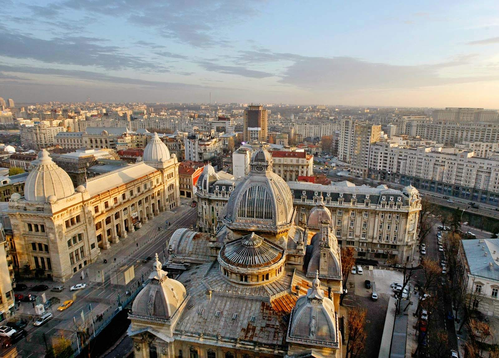
Бухарест
Столиця Румунії, найбільше місто. Палац Парламенту - друга за величиною будівля у світі.
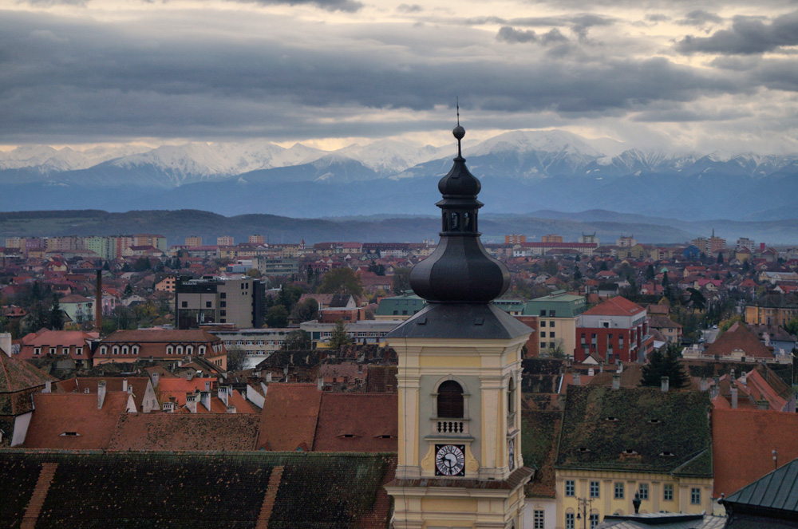
Сібіу
Культурна столиця Європи 2007. Відома своїми "очима" на дахах будинків.
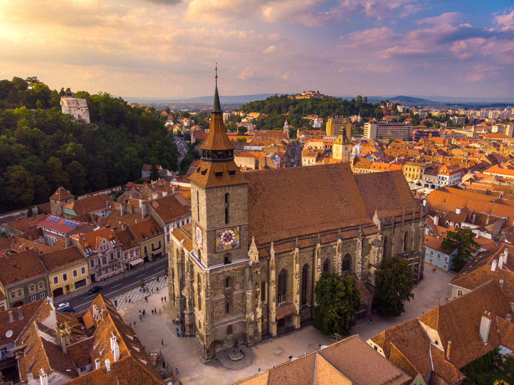
Брашов
Розташований у Трансільванії. Біля замку Бран (замок Дракули).
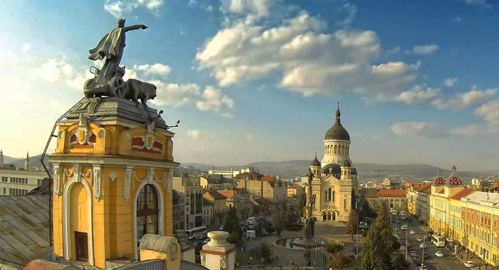
Клуж-Напока
Неофіційна столиця Трансільванії. Відомий університетський центр.

Тімішоара
Перше місто в Європі з електричним вуличним освітленням. Культурна столиця Європи 2023.
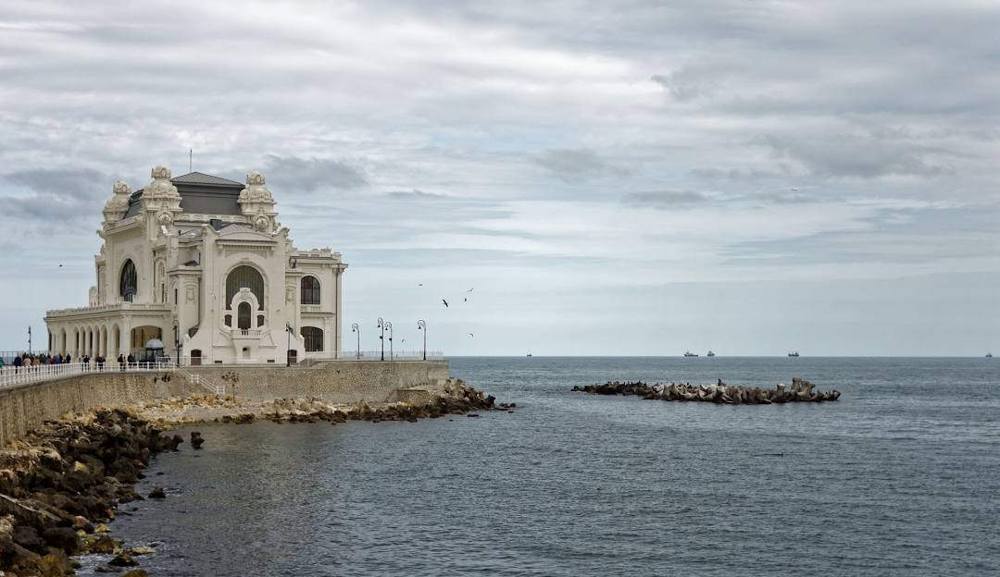
Констанца
Найбільший порт на Чорному морі. Відоме казино та античні руїни.
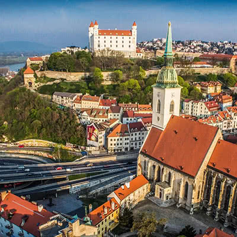
Ясси
Історична столиця Молдови. Культурний та академічний центр.
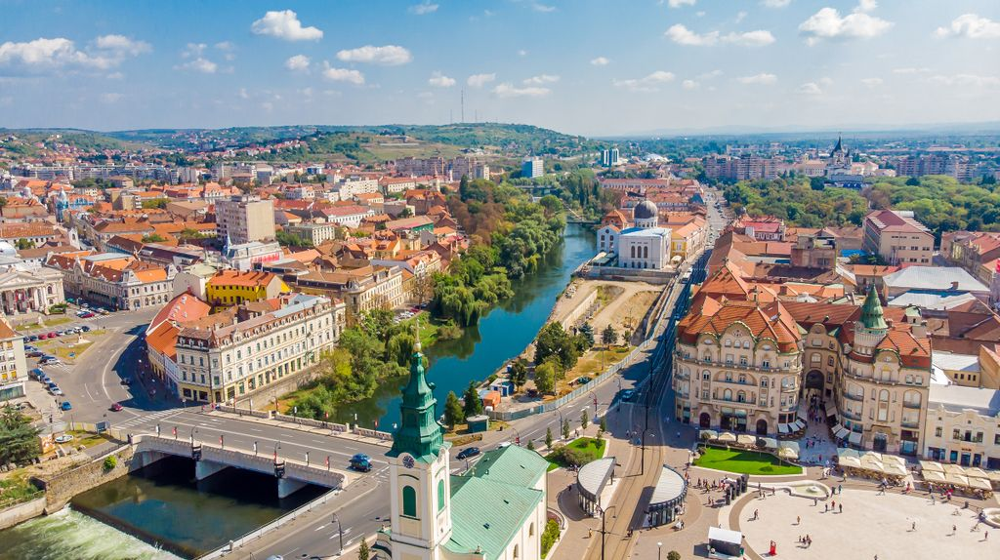
Крайова
Відома футбольним клубом "Університатя" та красивими парками.
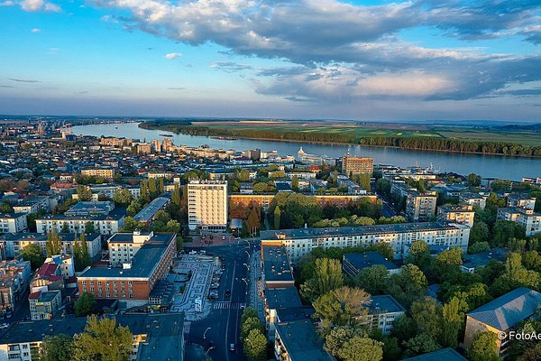
Галац
Великий порт на Дунаї. Центр суднобудування та металургії.
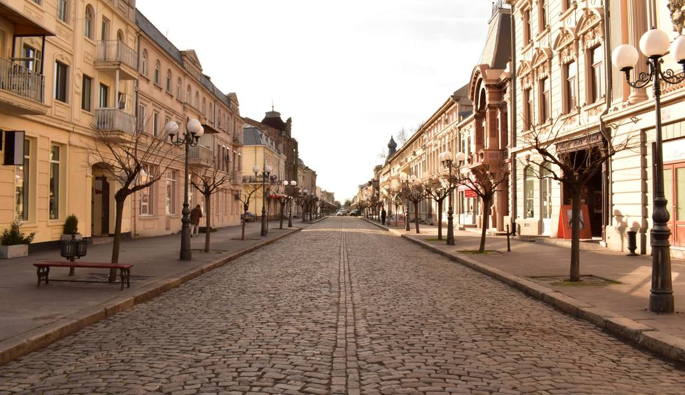
Браїла
Старовинне портове місто. Відоме церквою Св. Михайла.
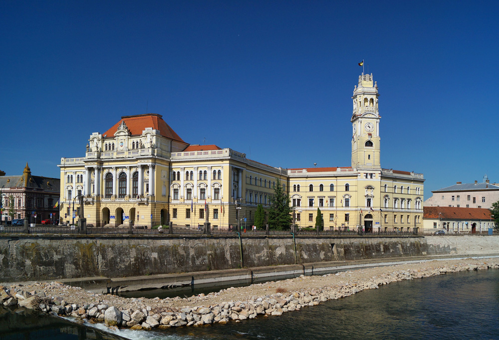
Орадя
Відома архітектурою стилю "сецесія". Багато красивих палаців.
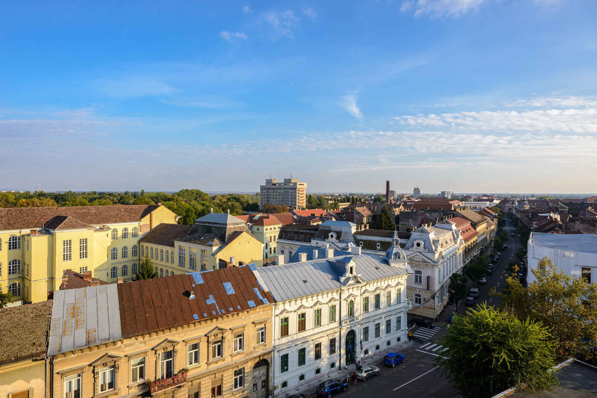
Арад
Місто на річці Муреш. Відома ратуша та театр.
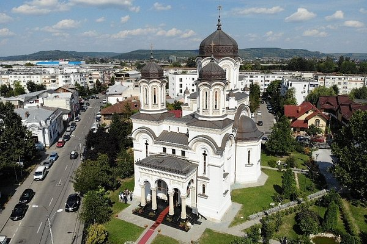
Пітешть
Важливий автомобільний центр (завод Dacia).
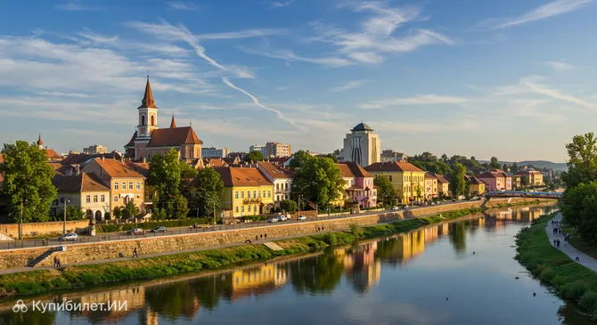
Бакеу
Міжнародний аеропорт. Відома родина музикантів.
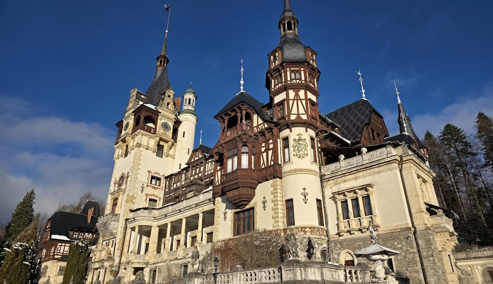
Плоєшть
Центр нафтової промисловості Румунії.
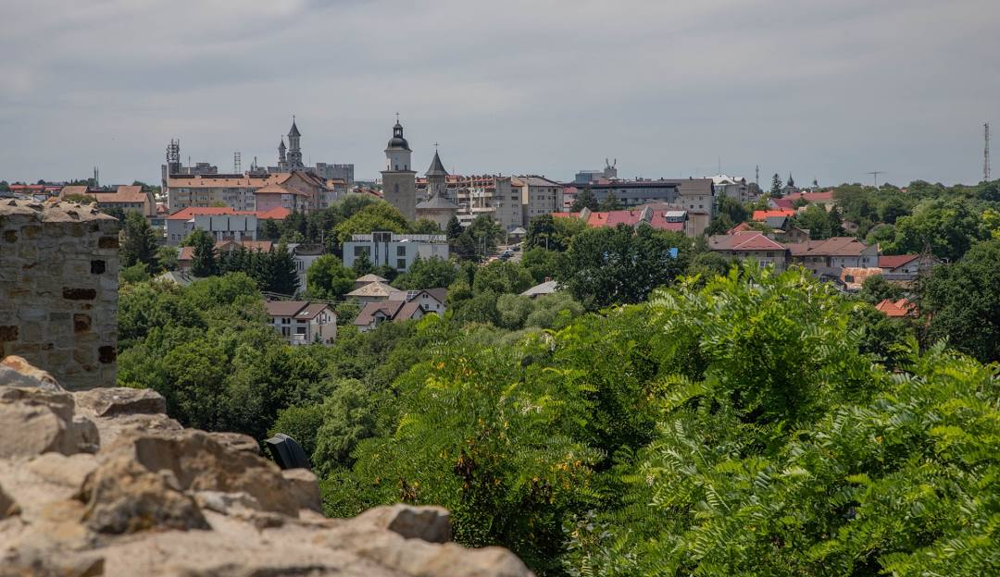
Сучава
Історична столиця Молдовського князівства.
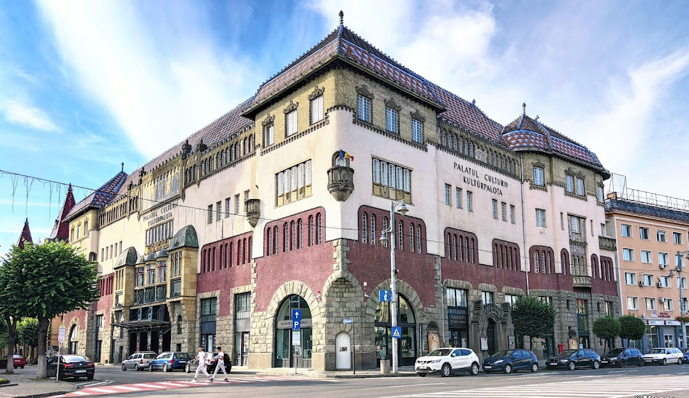
Тиргу-Муреш
Відомий Палац культури та театр.
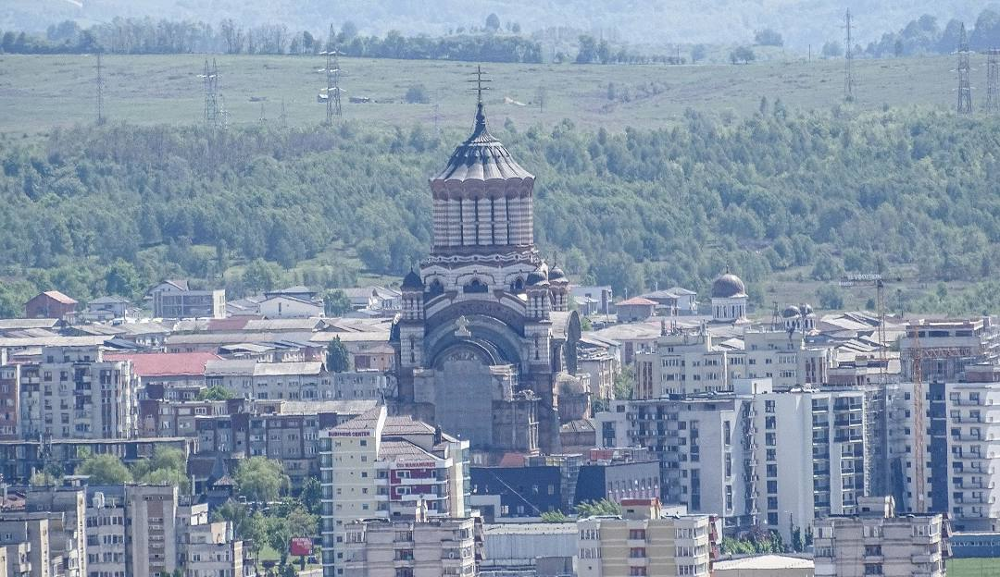
Бая-Маре
Центр гірничої промисловості. Відома вежа Секеїв.
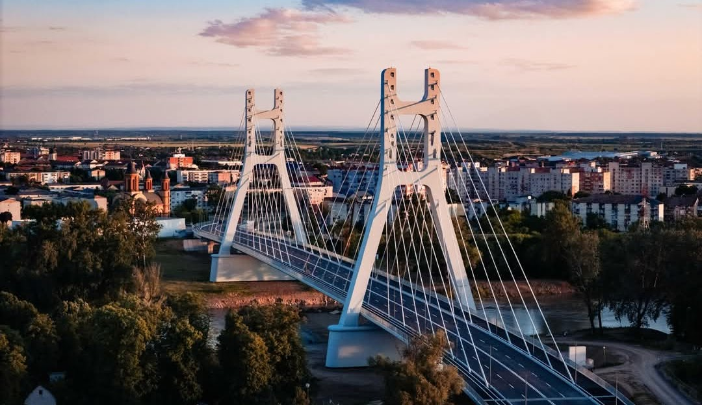
Сату-Маре
Місто на кордоні з Угорщиною. Красива площа Свободи.
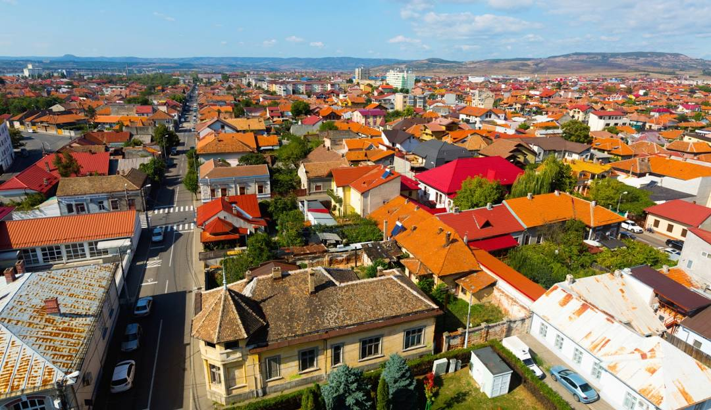
Дробета
Траянів міст — перший міст через Дунай (105 р. н.е.).